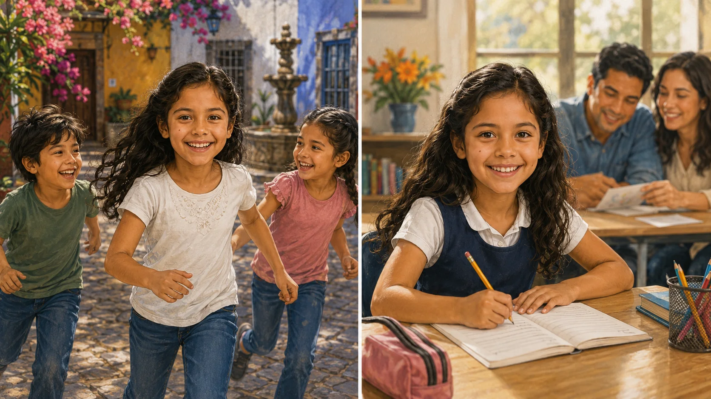
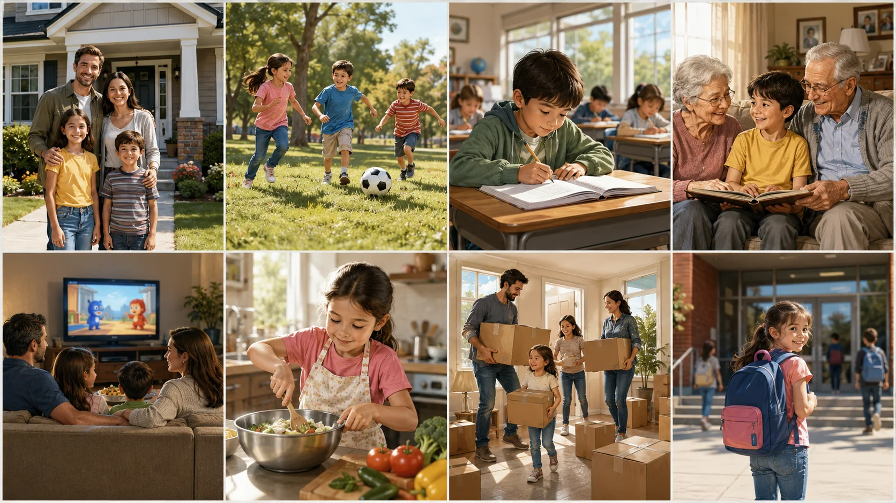
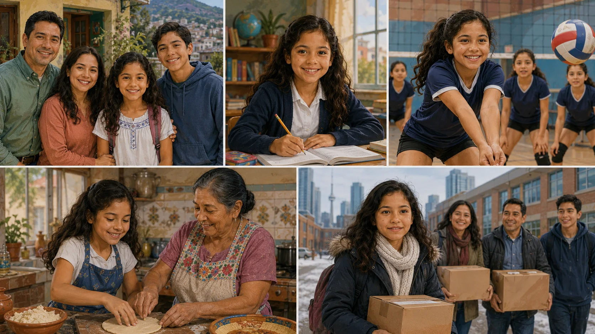
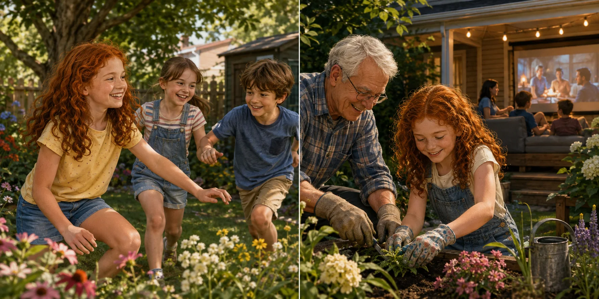
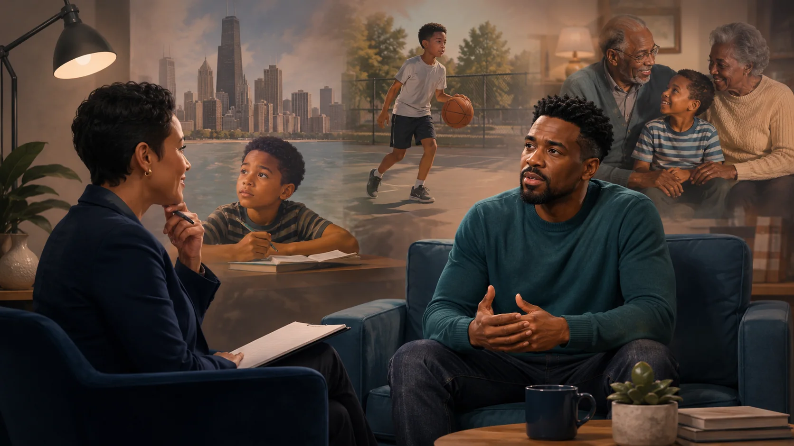

Growing up
Childhood memories and the things we did.
| LESSON | TIME | FOCUS | OUTPUT |
|---|---|---|---|
| 2 of 7 | 65–75 min | Regular Simple Past + did/didn’t + childhood | Ask about and describe childhood memories |
Aula 2 • Student Book
Today I can
- I can understand simple childhood memories.
- I can use common regular verbs to talk about childhood.
- I can ask simple questions with did.
- I can choose between a BE question and an ACTION question.
- I can talk about a few things I did as a child.
Reconnect • Flashback Friday
Remember Maya. Look at an old memory.

This was me in 2011. I was nine. I was in Mexico City with my cousins. We were very happy, and I was very active!
A. Remember Maya
- How old was Maya?
- Where was she?
- Who was with her?
- What was she like?
B. Look at the pictures
What activities can you see?
Vocabulary Lab • Childhood actions
Learn common actions for childhood memories.

| Base verb | Past |
|---|---|
| live | lived |
| play | played |
| study | studied |
| visit | visited |
| watch | watched |
| help | helped |
| move | moved |
| start | started |
A. Match
Match each scene to: live • play • study • visit • watch • help • move • start.
B. Base or past?
1. lived / live
2. study / studied
3. watched / watch
4. help / helped
5. start / started
6. moved / move
7. visit / visited
8. play / played
played • lived • moved | watched • helped | visited • started
The -ed ending does not always sound the same.
Grammar Focus • Simple Past
Talk about actions in the past. Ask what someone did.
A. Affirmative
| I | played soccer. |
| You | played soccer. |
| He / She | played soccer. |
| We / They | played soccer. |
The regular past verb does not change with he/she.
B. Negative
I did not play soccer. I didn’t play soccer.
✓ didn’t play ✗ didn’t played
C. Yes / No questions
Did you play soccer? Yes, I did. / No, I didn’t.
Did she study English? Yes, she did. / No, she didn’t.
D. WH questions
Where did you live? What did you play? Who did you visit?
WH + did + subject + BASE VERB
E. BE or ACTION?
BE QUESTION
Use was / were for description, age, person and situation.
Where were you?
What were you like?
Who was your best friend?
ACTION QUESTION
Use did + base verb for actions.
Where did you live?
What did you play?
Who did you visit?
BE → was / were | ACTION → did + base verb
F. Choose BE or DID
- Where you born?
- What you like as a child?
- Where you live?
- What you play?
- Who your best friend?
- Who you visit on weekends?
Controlled Practice • Childhood memories
Use the past forms in a short childhood story. Then build questions.
A. Complete the paragraph
When I was a child, I (live) in Toronto. I (study) at a school near my home. After school, I (play) basketball with my friends. I (not watch) much TV during the week. On Saturdays, I (visit) my grandparents and (help) them at home. When I was eleven, my family (move) to Chicago, and I (start) at a new school.
☑ play volleyball ☑ visit grandparents ☐ watch TV every afternoon
☑ help my parents ☑ study English ☐ play tennis
☑ walk to school ☐ clean my room
Did Maya play volleyball? — Yes, she did. She played volleyball.
Did Maya play tennis? — No, she didn’t.
B. Build questions
Write 6 questions about the other items. Write a short answer for each.
Did + subject + BASE VERB? Yes, ... did. / No, ... didn’t.
Listening Lab • Maya’s childhood
Listen to Maya talking about her childhood.

A. First listening • Get the main idea
1. Maya talks mainly about:
2. She talks about:
B. Second listening • Build the childhood album
| Memory | Detail |
|---|---|
| lived in | |
| studied | |
| played | |
| watched | |
| visited | |
| helped | |
| moved to | |
| started |
C. Third listening • Catch the action
1. I ______ in Mexico City.
2. I ______ at a school near my home.
3. I ______ volleyball with my friends.
4. I ______ cartoons with my brother.
5. We ______ my grandparents.
6. I ______ my grandma.
7. My family ______ to Toronto.
8. I ______ at a new school.
Listen for the action word. Past verbs tell you what happened.
Reading • Flashback Friday
Read a social-media memory post.

Here are two of my favorite memories from 2012. I was nine. I lived in Toronto with my parents and my brother. In the summer, I visited my grandparents every weekend. I played outside with my cousins, and we watched movies at night. I also helped my grandpa in his garden. We were noisy, but my grandparents were always happy when we visited!
Leo: You were so cute! Mia: Your grandparents’ house was beautiful! Emma: It was! We loved it there.
A. First read • What is the post mainly about?
B. Find the actions
Emma in Toronto. her grandparents. outside. movies. her grandpa.
C. BE or ACTION?
was • were
lived • visited • played • watched • helped
Question Lab • Ask about childhood
Choose the right question for the information you want.

A. Question bank
| About... | Question |
|---|---|
| childhood in general | How was your childhood? |
| place | Where did you live? |
| age | How old were you when you started school? |
| best friend | Who was your best friend? |
| another person’s personality | What was he/she like? |
| your personality | What were you like? |
| activity | What did you play? |
| family | Who did you visit? |
| TV / media | What did you watch? |
B. BE or ACTION?
C. First listening • What does the interviewer ask about?
D. Second listening • Complete
1. He was but very .
2. He lived in .
3. After school, he played and watched .
4. His best friend’s name was .
5. She was and very .
6. He visited his grandparents every .
7. He didn’t study . He studied .
E. Third listening • BE or ACTION?
| What were you like as a child? | |
| Where did you live? | |
| What did you do after school? | |
| Who was your best friend? | |
| What was she like? | |
| Did you visit your grandparents often? | |
| Did you study music? |
F. Ask a partner
Choose 4 questions. Ask at least one BE question and one ACTION question. Real, adapted or fictional answers are okay.
Speaking Lab • My childhood memories
Plan, rehearse and share a few childhood memories.
Use real, adapted or fictional memories. Share only what you want to share.
A. Memory map
| Topic | My notes |
|---|---|
| place | |
| school | |
| personality | |
| friends | |
| activities | |
| family | |
| important change • optional |
B. Sentence support
When I was a child, I was... I lived in... I studied at... I played... I visited... I watched... I helped... My family moved... I started...
C. Rehearse
Target: 45–60 seconds. Partner follow-up: one BE question + one ACTION question.
Exit Ticket + Self-assessment
Show what you can do.
A. Complete
1. When I was a child, I in Toronto. (live)
2. I soccer with my friends. (play)
3. Where you live?
4. What you like as a child?
5. Who your best friend?
B. After DID
After did, use:
C. Meaning check
| 1. What were you like? | a. asks about your personality |
| 2. What did you like? | b. asks about things you enjoyed |
D. One memory
E. Self-assessment • Scale 1–5
| Statement | 1 | 2 | 3 | 4 | 5 |
|---|---|---|---|---|---|
| I can recognize common regular past verbs. | |||||
| I can talk about simple childhood activities. | |||||
| I can ask a question with did. | |||||
| I can choose between a BE question and an ACTION question. | |||||
| I can share a few childhood memories. |
Homework Mode • Simple Past toolkit
Review regular past verbs, negatives and questions.
A. Base → past
1. live →
2. play →
3. study →
4. visit →
5. watch →
6. help →
7. move →
8. start →
B. Complete the childhood memory
When I was a child, I (live) in Toronto. I (study) at a school near my home. After school, I (play) basketball with my friends. I (not watch) much TV during the week. On Saturdays, I (visit) my grandparents and (help) them at home. When I was eleven, my family (move) to Chicago, and I (start) at a new school.
C. BE or ACTION?
Where ______ you born?
What ______ you like as a child?
Where ______ you live?
What ______ you play after school?
Who ______ your best friend?
Who ______ you visit on weekends?
How old ______ you when you started school?
______ you watch cartoons?
D. Fix it
- Did you played soccer?
- I didn’t watched TV.
- Where did you lived?
- She studyed English.
- My family moveed to Toronto.
Homework Mode • Childhood snapshots
Listen to three people describing their childhood.
E. First listening • Who is who?
1. Rachel → 2. Marcus → 3. Elena →
F. Second listening • Complete the snapshots
| Rachel | Marcus | Elena | |
|---|---|---|---|
| lived in | |||
| activity | |||
| family / person | |||
| one more detail |
G. Third listening • Catch the verb
1. I ______ in Boston.
2. I ______ tennis with my friends.
3. I ______ much TV.
4. We ______ my grandparents.
5. I ______ my parents in the garden.
6. My family ______ to Toronto.
7. I ______ English at school.
8. I ______ video games very often.
9. I ______ dance classes.
H. After listening • Build the question
Read the answer. Write the question that gets the information in bold. Yes/No question → answer MUST contain Yes or No. WH-question → answer gives the specific information.
1. Rachel lived in Boston.
2. Rachel played tennis with her friends.
3. No, she didn’t. She didn’t watch much TV.
4. Marcus was quiet at school.
5. Marcus played basketball with his brother.
6. Marcus’s family moved to Toronto.
7. Elena studied English at school.
8. No, she didn’t. Elena didn’t play video games very often.
9. Yes, she was. Elena was very happy in her dance classes.
BE information → use was / were. Action information → use did + base verb.
Homework Mode • Read and write about childhood
Read a memory board and create your own childhood story.
Daniel lived in São Paulo when he was a child. He started school when he was seven. After school, he played soccer with his friends. His grandparents lived in Rio de Janeiro, and Daniel visited them during school vacations. When he was eleven, his family moved to Toronto. He started at a new school there. At first, he was nervous, but his teachers were friendly.
J. Read and answer
1. Where did Daniel live?
2. How old was he when he started school?
3. What did he play?
4. Who did he visit?
5. Where did his family move?
6. What were his teachers like?
K. BE or ACTION question?
1. What were his teachers like?
2. Where did he live?
3. How old was he?
4. What did he play?
5. Who did he visit?
L. My childhood memory map
| Topic | My information |
|---|---|
| place | |
| personality | |
| school | |
| friends | |
| activities | |
| family | |
| important change • optional |
M. Write • Growing up
Write 6–8 sentences. Use at least one sentence with was/were and at least three regular past verbs.
Support: When I was a child, I was... / I lived in... / I studied at... / I played... / I watched... / I visited... / I helped... / My family moved... / I started...
N. One BE + one ACTION question
BE question
ACTION question